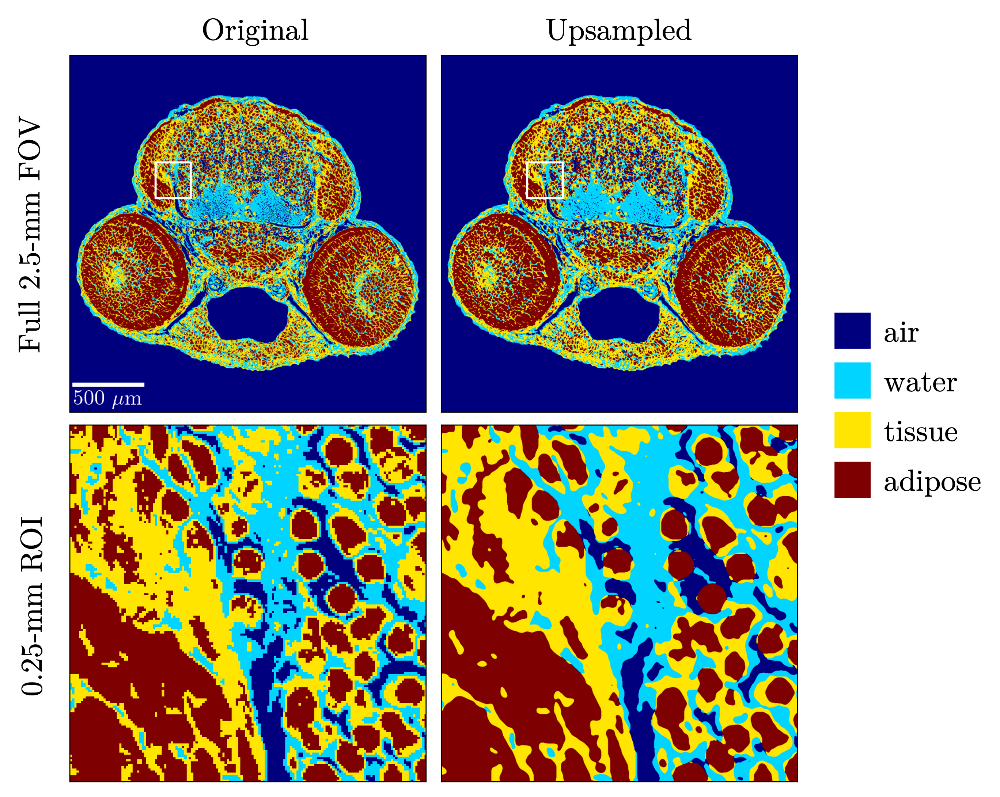
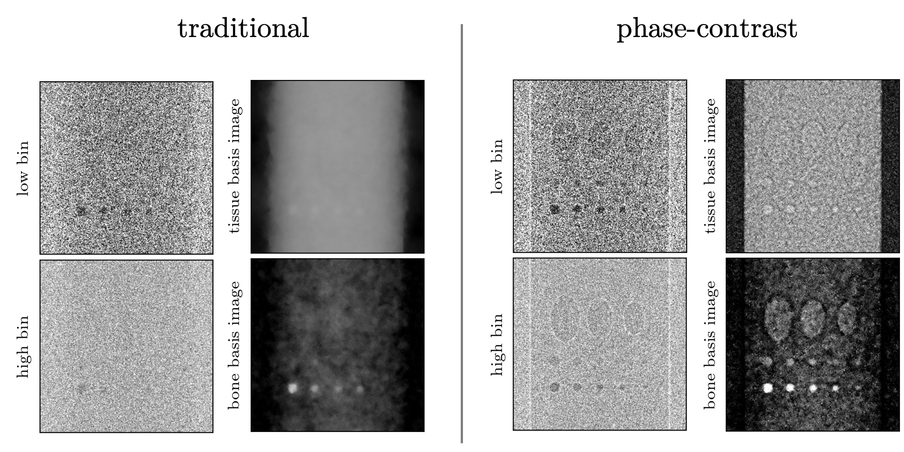
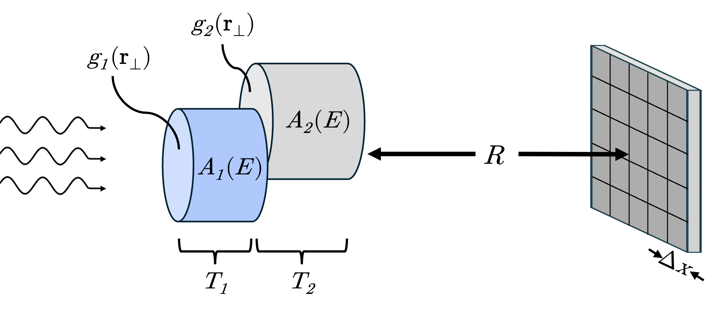
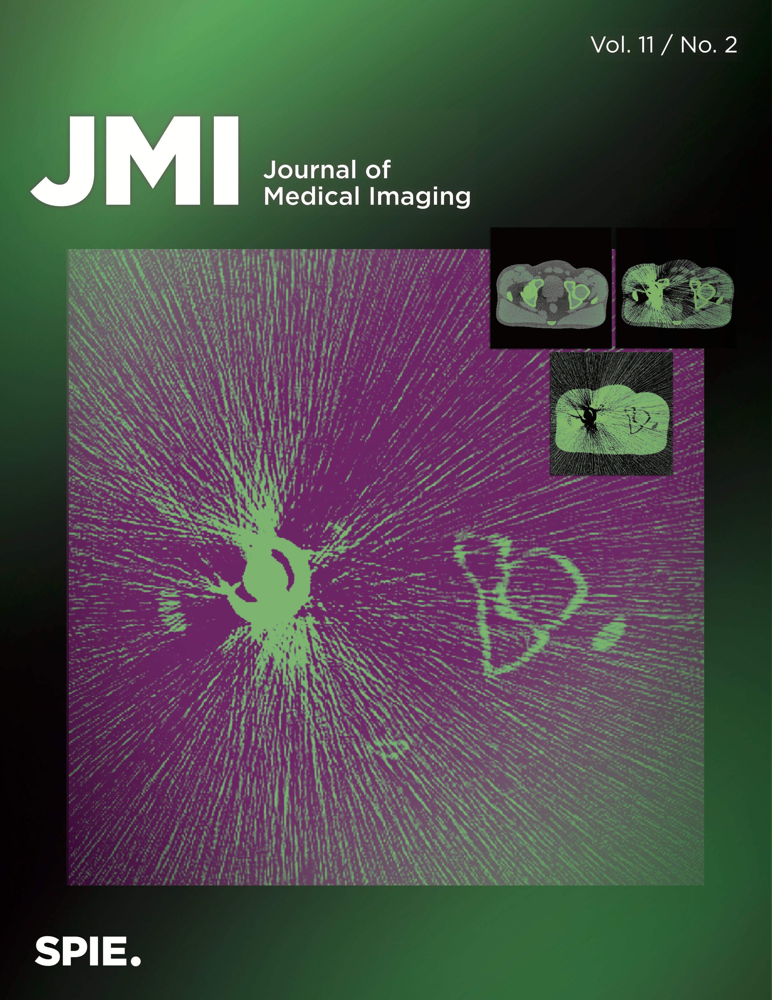
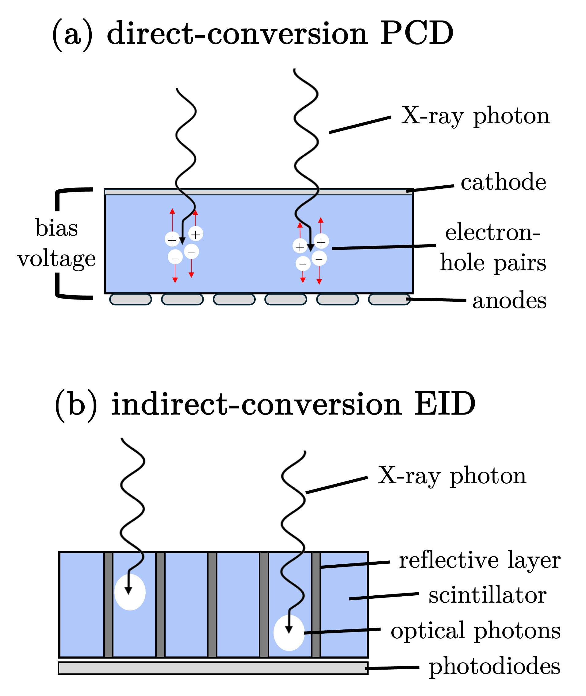
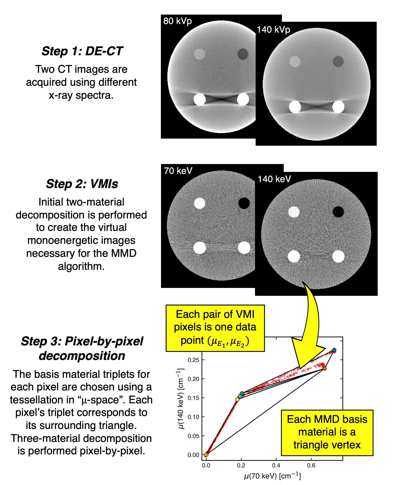

Hello, I'm
Gia Jadick
PhD Candidate @ UChicago


Hello, I'm
PhD Candidate @ UChicago

Hello! I'm Gia Jadick. I am a medical physics PhD candidate at the University of Chicago, advised by Patrick La Rivière, where I develop computational methods for advanced X-ray and CT imaging.
My dissertation research unites spectral imaging with propagation-based phase contrast through the lens of material decomposition. I study how and when conventional approximations in phase-contrast imaging break down, and I develop computational strategies for incorporating more general image acquisition models to improve basis material image reconstruction.
I am broadly interested in spectral photon-counting CT, phase contrast, inverse problems, and physics-based computational imaging. I build large-scale Python simulation and reconstruction tools, including GPU-parallelized forward models and automatically differentiable iterative reconstruction algorithms. My recent work spans applications to high-resolution phase-contrast micro-CT of zebrafish, spectral photon-counting mammography for microcalcification morphology classification, multi-material decomposition for cardiac CT, and MV-kV dual-energy CT for radiotherapy imaging.
I graduated cum laude from Duke University in 2020 with a BS in physics and BA in political science. There, I researched realistic CT simulation, mechanosensing of E. coli bacteria, and vintage saxophone mouthpiece acoustics.
My research code and related projects are publicly available on GitHub, with selected repositories linked below. My PhD studies are funded by the NSF Graduate Research Fellowship Program with additional support from the AAPM/RSNA Graduate Fellowship. I am defending my dissertation in June 2026.

We developed simulation and reconstruction tools for phase-contrast synchrotron micro-CT, comparing the projection approximation with a multi-slice forward model for more accurately incorporating high-resolution internal refractive effects. Manuscript in progress.

We developed an auto-differentiation enabled iterative material decomposition method for spectral X-ray phase-contrast imaging with photon-counting detectors, using a full polychromatic model to recover quantitative material images, with applications to microcalcification morphology classification. Manuscript in progress.

We developed a Cramér–Rao lower bound (CRLB) framework for spectral phase-contrast imaging, building various toy models to incorporate the information of propagation-based edge-enhancement effects. These models were applied to energy threshold optimization of polychromatic photon-counting detector measurements. Manuscript in progress.

We assessed a novel dual-energy CT approach: combining a megavoltage (MV) and kilovoltage (kV) source in "MV-kV" imaging for use on radiotherapy systems that are conveniently already equipped with the two x-ray sources. Our publication was featured on the cover of the Journal of Medical Imaging.

We compared MV-kV dual-energy CT using new photon-counting detectors (PCDs) versus conventional energy-integrating detectors (EIDs), optimizing spectral dose allocation and quantifying contrast-to-noise ratio improvement.

We performed sensitivity analysis of a dual-energy CT method for material decomposition into more than two materials, with applications to cardiac imaging for differentiating soft tissue, adipose, calcium, and iodine.
Get in Touch

giavanna [at] uchicago [dot] edu